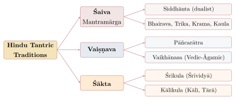

Chapter 1: Introduction: Tantra and Āgama¶
1.1 The Meaning of Tantra and Āgama¶
Few words in Indian religious history have been as widely misunderstood as tantra. In modern popular usage the term has been narrowed to suggest exotic sexuality or vague occultism, a reduction that owes as much to nineteenth-century colonial polemic as to twentieth-century Western marketing. The Sanskrit word derives from the root tan, “to stretch, extend, weave”, with the instrumental suffix -tra: a tantra is literally a loom or the warp on a loom, and by extension a framework, system, doctrine or treatise. In classical Sanskrit the word is used for any systematic work (the Pañcatantra is a collection of fables; the Mīmāṃsākas speak of tantra as a ritual principle). Only gradually did it come to denote a particular class of revealed scriptures and the traditions based on them (Padoux 2017; Goudriaan and Gupta 1981).
Tantric authors also offered devotional “etymologies” (nirukti) of the word. A verse widely quoted as coming from the Kāmikāgama explains tantra as that which “extends” (tanoti) many matters concerning tattva (principles of reality) and mantra, and “protects” (trāṇaṃ kurute). It is given here as later authors cite it; its place in the surviving Kāmika has not been checked against an edition:
Attributed to the Kāmikāgama
tanoti vipulān arthān tattvamantrasamanvitān |
trāṇaṃ ca kurute yasmāt tantram ity abhidhīyate ||
Because it extends many matters joined with tattva and mantra, and because it gives protection, it is called tantra.
Such explanations are plays on sound, not historical etymology: the element -tra is an ordinary instrumental suffix and has nothing to do with trā “to protect”. They show, all the same, what the tradition took its scriptures to be: comprehensive revelations of the structure of reality, of the mantras that act upon it, and of the means of salvation.
The word āgama means “that which has come down” (from ā-gam, “to come towards”), that is, a teaching received through transmission. In the Tantric traditions it denotes scripture revealed by a deity. A popular verse of uncertain origin plays on the three syllables ā-ga-ma: the teaching has “come” (āgata) from the mouths of Śiva, “gone” (gata) to the Goddess, and been “approved” (mata) by Vāsudeva. Some Śākta texts distinguish āgama, a teaching spoken by Śiva to the Goddess, from nigama, one spoken by the Goddess to Śiva; elsewhere nigama simply denotes the Veda.
1.1.1 What Counts as “Tantra”?¶
Modern scholars use “Tantra” in two senses. In the narrow sense it refers to the scriptures called tantra, āgama or saṃhitā and the traditions that regard them as revelation. In the wider sense (“Tantrism”) it is a label for a cluster of practices and ideas found across Śaiva, Vaiṣṇava, Śākta, Buddhist and Jain religion from about the fifth or sixth century CE onwards. Padoux and Flood both stress that “Tantrism” is a scholarly category rather than a self-description, and that no single feature is shared by every tradition so labelled (Padoux 2017; Flood 2006).
The features most often listed form a recognisable family. Practice begins with initiation (dīkṣā) by a guru, which in many systems is itself a cause of liberation. The initiate receives mantras, including monosyllabic “seed” (bīja) mantras, which are understood as the deity’s own form in sound. Worship is elaborate, and before he worships the deity the worshipper purifies and divinises his own body (bhūtaśuddhi, nyāsa); the deity and its retinue are installed in diagrams (maṇḍala, yantra). The cosmos is mapped as a graded hierarchy of principles (tattvas) through which the soul is bound and through which it ascends. The goals are both liberation (mukti) and supernatural power or worldly benefit (bhukti, siddhi). And the teaching is secret: in some traditions it includes the ritual use of substances and acts that orthodox Brahmanical norms forbid. None of these features is unique to Tantra, and not every Tantric tradition has all of them; it is the combination that is distinctive. The approach adopted in this volume, which starts from the scriptures themselves, is discussed again at the end of the book (Section 14.7).
1.2 Tantra and Veda¶
The relationship between the Tantric and Vedic traditions was contested from the beginning, and it shaped how the Tantric scriptures defended their authority. In a philosophical culture that took the Veda as the norm of valid knowledge (pramāṇa), the Mīmāṃsā position was severe: Kumārila Bhaṭṭa (7th century) held that only the authorless Veda has intrinsic validity (svataḥprāmāṇya), so that texts composed by persons, even divine ones, are reliable only insofar as they agree with it. Kumārila placed the Pāñcarātra and Pāśupata scriptures outside the Veda, and several Dharmaśāstra and Purāṇa passages treat Tantric initiates as heretical or impure.
The Tantric traditions answered in three ways. Many Śaiva Siddhānta and Pāñcarātra authors presented their scriptures as consistent with the Veda, adding a higher and more specific teaching to the general Vedic one, and South Indian temple priests (ādiśaivas, bhaṭṭācāryas) have long insisted on their Vedic credentials. A second line defended the scriptures’ independent authority: the Vaiṣṇava teacher Yāmuna (10th–11th century) argued in his Āgamaprāmāṇya that the Pāñcarātra, revealed by the omniscient Lord, is as authoritative as the Veda and does not contradict it, and Rāmānuja adopted his position (van Buitenen 1971); Siddhānta authors such as Sadyojyotis and Rāmakaṇṭha argued in the same way from Śiva’s omniscience. A third line claimed superiority: the Bhairava and Kaula scriptures, and Abhinavagupta after them, placed Vedic religion low in an ascending hierarchy of revelations — Vedic, Siddhānta, Bhairava, Kaula — with their own teaching at the summit, and some texts deliberately inverted Vedic purity rules (Sanderson 1988).
Meanwhile Tantric ritual steadily entered orthodox practice. Much of the pūjā performed by “Smārta” Brahmins today, including nyāsa and bīja mantras, is Tantric in origin (Bühnemann 1988; Sanderson 2009). The Tantric theory of language, which treats the phonemes as forms of power and mantras as the deity’s body rather than as conventional signs, also defined itself against both the Mīmāṃsā doctrine of the eternal Veda and the Buddhist view of language as convention (Chapter 7).
1.3 Genres of Tantric Literature¶
Readers of Tantric literature meet several kinds of text, which carry different kinds of authority. Scriptures (āgama, tantra, saṃhitā, yāmala, mata) present themselves as revealed by a deity, usually in dialogue between Śiva and the Goddess, Bhairava and Bhairavī, or the Lord and a sage; their Sanskrit is often irregular, and they were revised and expanded over centuries. Commentaries (vṛtti, ṭīkā, vivaraṇa, viveka) are the work of named human authors, such as Rāmakaṇṭha on the Kiraṇa or Jayaratha on the Tantrāloka. Independent treatises argue a philosophical case, as Utpaladeva’s Īśvarapratyabhijñākārikā or Meykaṇṭār’s Civañāṉapōtam do. Ritual manuals (paddhati), such as those of Somaśambhu and Aghoraśiva, guide the officiant step by step and in practice often shaped ritual more than the scriptures did. Digests (nibandha, saṁgraha), such as the Śāradātilaka, the Mantramahodadhi and Kṛṣṇānanda’s Tantrasāra, compile material from many scriptures. Finally there are hymns (stotra) and vernacular poetry: the Saundaryalaharī, Utpaladeva’s hymns, the Tamil Tēvāram and Āḻvār hymns, the Kannada vacanas, the Buddhist dohās and the Bengali Śākta songs.
Much of what is popularly attributed to “the Tantras” comes in fact from late digests, from modern manuals or from oral tradition. Wherever possible this volume identifies which kind of source a statement rests on.
1.4 Canons and Classes of Scripture¶
Each Tantric stream gives conventional canonical numbers: twenty-eight Śaiva Siddhānta Āgamas, 108 Pāñcarātra Saṃhitās and sixty-four Bhairava or Śākta Tantras. These numbers are ideal, not descriptive: some texts on the lists are lost, others survive only in later redactions, and many important texts are not on the lists at all (Goudriaan and Gupta 1981; Flood 2006). Figure 1.1 sets out the main Hindu streams in simplified form.

The Śaiva Āgamas. The Siddhānta canon recognises twenty-eight principal Āgamas (mūlāgamas), traditionally divided into ten Śivabheda texts, from the Kāmika to the Suprabheda, and eighteen Rudrabheda texts, from the Vijaya to the Vātula, each with subsidiary scriptures (upaāgamas). Tradition assigns them to the five faces of Śiva; the full list is given in Table 2.1. Research since the 1990s, much of it based on early Nepalese manuscripts, has shown that the oldest Siddhānta scriptures — the Niśvāsa, the Svāyambhuvasūtrasaṅgraha, the Rauravasūtrasaṅgraha, the Kiraṇa, the Pārameśvara, the Mataṅgapārameśvara, the Sarvajñānottara and others — were composed in North India and were the texts quoted by the Kashmiri commentators of the tenth and eleventh centuries. Many of the South Indian texts that now bear names from the list, such as the Kāmika and the Kāraṇa, are much later compilations, often later than the twelfth century, which absorbed material from the ritual manuals (Goodall et al. 2015; Sanderson 2009). The Śaiva canon and its four-part ideal structure — doctrine, yoga, ritual and conduct — are described in Chapter 2.
The Pāñcarātra Saṃhitās. The Pāñcarātra claims 108 Saṃhitās, though later lists name over two hundred titles. Three early works, the Sātvata, Pauṣkara and Jayākhya, are honoured as the “three gems”; Chapter 3 shows that still earlier works survive in Nepalese manuscripts.
The Bhairava and Śākta Tantras. The scriptures of the Bhairava class, which are the matrix of the later Śākta traditions, are listed in the Śrīkaṇṭhīya Saṃhitā (as quoted by Jayaratha) as sixty-four texts in eight groups of eight. The best known surviving works of this family include the Svacchanda, the Brahmayāmala (also called Picumata), the Siddhayogeśvarīmata, the Mālinīvijayottara, the Jayadrathayāmala and the Kubjikāmata. Later Śākta works include the Vāmakeśvarīmata, the Yoginīhṛdaya, the Kulārṇava, the Tantrarāja and many Bengali and Assamese Tantras of the fifteenth to eighteenth centuries, among them the Mahānirvāṇa, a work of the late eighteenth century (Section 4.5) (Sanderson 1988; Goudriaan and Gupta 1981).
Buddhist and Jain Tantra. Buddhist Tantra, the Mantranaya or Vajrayāna, has its own scriptures, from the early ritual Tantras to the Guhyasamāja, Cakrasaṃvara, Hevajra and Kālacakra. They were studied at Nālandā, Vikramaśīla and other monasteries and transmitted to Tibet, where they remain central to all schools. Jain authors adopted mantra, diagram and the worship of protective goddesses within a framework that rejected blood offering and transgressive rites. Both are treated in Chapter 10. The boundaries were porous: the Buddhist Yoginītantras borrowed whole passages from Śaiva scriptures, and the Buddhist goddess Tārā entered the Hindu lists of the Mahāvidyās (Sanderson 2009; Shaw 2006).
1.4.1 Saura and Gāṇapatya Traditions¶
Later Smārta Brahmins worship five deities together — Śiva, Viṣṇu, the Goddess, the Sun (Sūrya) and Gaṇeśa — in the pañcāyatana rite, and hagiography credits Śaṅkara with reconciling six cults (ṣaṇmata), adding Skanda. Two of these, the Saura and the Gāṇapatya, also had Tantric forms, though on a much smaller scale than the Śaiva, Vaiṣṇava and Śākta traditions.
A distinctive cult of the Sun, served by priests called Magas or Śākadvīpī Brahmins, is described in the Sāmba and Bhaviṣya Purāṇas. Their legend tells how Sāmba, son of Kṛṣṇa, was cured of a skin disease by the Sun, built his temple at Mūlasthāna (Multan) and brought Maga priests from Śākadvīpa to serve it; the names and some practices of these priests reflect Iranian influence (Stietencron 1966). Great Sun temples were built at Modhera in Gujarat (1026–27) and Koṇārka in Odisha (13th century). Saura Tantric scriptures existed but are largely lost, known chiefly from quotations. Their legacy survives inside Śaivism: in the Siddhānta manuals, the daily worship of Śiva is preceded by a worship of the Sun (Brunner-Lachaux 1963–1998; Sanderson 2009).
Images of Gaṇeśa become common from about the fifth century. In Tantric ritual of every tradition the elephant-headed god, as Vināyaka, the remover of obstacles, is worshipped first, and he appears in the outer enclosures of many maṇḍalas. A separate Gāṇapatya tradition, treating him as the supreme deity, produced the Gaṇeśa and Mudgala Purāṇas and the late Gaṇapati Upaniṣad, and took root above all in Maharashtra, where the saint Morayā Gosāvī of Chinchwad and the circuit of eight shrines (aṣṭavināyaka) became its centres. Tantric forms of the god include Mahāgaṇapati, worshipped with his consort in Śrīvidyā, and Ucchiṣṭagaṇapati, whose left-handed cult was conducted in a state of ritual impurity (ucchiṣṭa, “with the remnants of food in the mouth”). Buddhist Tantra also adopted Gaṇapati, who reached Japan as Kangiten (Section 10.16) (Courtright 1985).
1.5 Historical Overview¶
Table 1.1 gives a schematic periodisation, which the chapters that follow fill in. Dates follow mainstream scholarship; traditional dates, where they differ, are noted in the chronology at the end of the volume.
| Period | Development |
|---|---|
| Before c. 450 CE | Vedic mantra and ritual; Śaiva ascetic movements (Pāśupatas, attested by the Mathurā pillar inscription of 380 CE); goddess cults; no surviving Tantric scripture |
| c. 450–700 CE | Earliest surviving Śaiva Tantra (Niśvāsa); Devīmāhātmya; early Buddhist ritual Tantras; the Tamil poet-saints, Nāyaṉmārs and Āḻvārs (c. 6th–9th century) |
| c. 700–1200 CE | The “Śaiva Age” (Sanderson): royal patronage of Śaiva initiation across South and Southeast Asia; Bhairava and Kaula scriptures; early Pāñcarātra Saṃhitās; Buddhist Yoginītantras; Kashmiri exegesis (Abhinavagupta, c. 950–1016); Siddhānta manuals |
| c. 1200–1800 CE | Tamil Śaiva Siddhānta (Meykaṇṭār, 13th century); South Indian Āgamic compilations; Śrīvidyā in the South (Bhāskararāya, 18th century); Bengali and Assamese Śākta Tantras; decline of Buddhism in India |
| 19th century | Colonial and missionary polemic against “Tantrism”; first printed editions |
| 20th–21st century | Arthur Avalon (Sir John Woodroffe); Kashmir Series of Texts and Studies; critical editions of the Institut Français de Pondichéry; historical and philological research; living temple traditions |
The systematised Tantric scriptures appear only from about the fifth or sixth century CE, but they drew on older material. The Ṛgveda’s reflections on sacred speech (Vāc), for instance in the hymn ṚV 10.125, were later read as anticipations of the Tantric theology of the Word. The healing, protective and aggressive rites of the Atharvaveda form a typological, if not a direct historical, bridge to Tantric ritual for worldly ends. The Śrīsūkta, a hymn to Śrī-Lakṣmī among the supplementary khila hymns appended to the fifth book of the Ṛgveda, was widely used in later goddess worship. The Śatarudrīya of the Yajurveda (Taittirīya Saṃhitā 4.5) and the Śvetāśvatara Upaniṣad supplied the vocabulary of later Śaiva theology, and the five mantras of Śiva in the Taittirīya Āraṇyaka (10.43–47) became the basis of the Āgamic doctrine of Śiva’s five faces. Above all, the ascetic orders of the Pāśupatas and their successors — the “Atimārga” in Sanderson’s terminology — preceded and shaped the Tantric Śaiva “Mantramārga” (Section 2.1).
Scholarly Note: Is Tantra Prehistoric?
Popular books often claim that Tantra goes back to the Indus Civilisation of the third millennium BCE, citing the so-called “proto-Śiva” seal from Mohenjo-daro, which shows a horned figure seated among animals, and the female figurines found at Harappan sites. These claims cannot be sustained. The Indus script is undeciphered; the identification of the seated figure with Śiva, first proposed by John Marshall in the 1930s, is one interpretation among several; and there is no textual or archaeological evidence linking Harappan religion to the specific doctrines and rituals of the Tantras, which appear in the historical record only from about the fifth century CE. Tantric traditions certainly drew on older Indian religious elements — Vedic mantra, ascetic practice, goddess cults and folk ritual — but “Tantra” as a body of scripture and practice is a product of the early medieval period (Samuel 2008; Sanderson 2009).
The formative period, from about 450 to 700, saw the composition of the oldest layer of the Niśvāsatattvasaṃhitā, dated by its editors to about 450–550 (Goodall et al. 2015); the Devīmāhātmya, the first sustained Sanskrit theology of the Great Goddess (Coburn 1984); and the first Buddhist ritual Tantras, followed in the seventh century by the Mahāvairocana and the Tattvasaṅgraha. The centuries from about 700 to 1200 produced the greater part of the surviving Śaiva and Buddhist Tantric literature and its most sophisticated commentaries: the Siddhānta exegesis of Sadyojyotis, Bhaṭṭa Nārāyaṇakaṇṭha and Rāmakaṇṭha; the non-dual synthesis of Abhinavagupta and Kṣemarāja in Kashmir; the ritual manuals of Somaśambhu (1095) and Aghoraśiva (12th century); the Vaiṣṇava defence of the Pāñcarātra by Yāmuna and Rāmānuja; and, in eastern India under the Pālas, the Buddhist Yoginītantras and the Kālacakra (early 11th century). The Kulārṇava and Tantrarāja probably belong to the following two centuries, and the Tamil Śaiva Siddhānta took its classical form with Meykaṇṭār’s Civañāṉapōtam in the thirteenth century.
1.6 Guru, Lineage and Initiation¶
The Āgamic traditions give great weight to transmission through a lineage (paramparā) of teachers. Knowledge of the scriptures is not supposed to be acquired by private reading; it must be received through initiation from a qualified guru. The lineage may be personal, from master to disciple; hereditary, as among the South Indian temple priests (ādiśaivas, bhaṭṭācāryas); monastic, as in the medieval Siddhānta maṭhas and the Tamil ātīṉams; or visionary, as when Kaula and Śrīvidyā lineages trace their teaching through divine, perfected and human streams (divya, siddha, mānava oghas). A verse from the Guru Gītā (traditionally assigned to the Skanda Purāṇa) expresses the devotional attitude to the teacher common to many later traditions:
Guru Gītā, short recension 32
gurur brahmā gurur viṣṇur gurur devo maheśvaraḥ |
gurur eva paraṃ brahma tasmai śrīgurave namaḥ ||
The guru is Brahmā, the guru is Viṣṇu, the guru is the god Maheśvara. The guru alone is the supreme Brahman: to that glorious guru, salutation.
In common recitation the third quarter usually reads guruḥ sākṣāt paraṃ brahma. All the traditions treated in this volume agree that the guru is indispensable, but they understand the relationship in different ways, and the differences say much about each tradition.
In the Śaiva Siddhānta the guru is the instrument through which Śiva acts in initiation. What matters is his ritual competence and his consecration as ācārya, not his personal holiness: the liberating power of initiation lies in the rite, which the guru performs while identified with Śiva. The manuals accordingly describe the qualifications of teacher and pupil largely in terms of birth, conduct and ritual knowledge, and they regulate the relationship after initiation by the rules (samayas) that bind the initiate to honour the guru, his family and his lineage (Brunner-Lachaux 1963–1998). Entitlement (adhikāra) follows the grade of initiation: the samayin may attend worship and receive mantras; the putraka, having received the liberating initiation, performs the daily worship of Śiva; the sādhaka propitiates a mantra to obtain powers; and the ācārya initiates others and performs consecrations (Table 2.6). In the South this conception allowed the role to become hereditary in priestly and monastic lineages.
The Kashmiri non-dualists placed the weight elsewhere. For Abhinavagupta the true guru is one in whom the nature of consciousness has been fully recognised, and the transmission of that recognition can, in the highest case, take place without elaborate ritual; later Kaula manuals such as the Kulārṇava speak of initiation by touch, by a glance or by thought alone. Ritual initiation remains necessary for those of lesser receptivity, graded according to the intensity of the “descent of power” (śaktipāta) in the disciple (Section 2.14), and Abhinavagupta even allows that a person may be initiated directly by the deity (Sanderson 1988; Törzsök 2014). The Kaula and Krama lineages, with their stress on oral transmission and on lines of teachers that include women (Section 4.14), belong to this side of the spectrum.
Later Śākta and Kaula manuals combine both conceptions with an intense devotion to the guru. They require teacher and pupil to test each other before initiation, often for a year; they forbid the disclosure of the mantra and of the guru’s instructions to the uninitiated; and they prescribe the daily worship of the guru and of the lineage of teachers, often in the form of the guru’s sandals (pādukā) visualised on the crown of the head. The Kulārṇava Tantra combines the most exalted claims — the guru is Śiva himself in human form — with warnings against teachers interested only in their pupils’ wealth, and the tension between absolute devotion and the need to discern a true teacher runs through the whole literature. Buddhist Tantra developed the same ideal of devotion to the master (vajrācārya), codified in the Gurupañcāśikā (“Fifty Verses on the Guru”), traditionally attributed to Aśvaghoṣa, which also advises the disciple to examine a teacher before accepting him. In the Śrīvaiṣṇava tradition the ācārya who confers the five sacraments becomes, especially for the Teṉkalai school, a mediator whose acceptance of the disciple is itself a ground of salvation (Section 3.7), and the Gauḍīya ritual code opens with the qualifications of guru and disciple (Section 3.14) (Broo 2023).
The authority that all these traditions give the guru has been a source both of their continuity and of their vulnerability. It has preserved oral teachings and lineages for centuries, and it has also, in modern times, been exploited by teachers who claimed Tantric sanction for abuse (Section 14.2).
1.7 Manuscripts and the Modern Recovery of the Āgamas¶
Unlike the Vedic corpus, preserved by oral recitation of extraordinary fidelity, most Āgamic texts survived in manuscripts. In the Tamil country they were written on palm leaf in the Grantha script and are now held in collections such as those of the Institut Français de Pondichéry, the Sarasvati Mahal at Thanjavur, the Adyar Library and the Government Oriental Manuscripts Library in Chennai; Kashmiri works were copied in the Śāradā script, on birch bark and later paper; Kerala’s ritual manuals in Malayalam script; and the scriptures of the Bhairava, Śākta and Buddhist traditions in the scripts of Nepal, whose National Archives in Kathmandu hold many of the oldest witnesses. The dry climate of the Kathmandu Valley and the continuity of Tantric practice there preserved palm-leaf manuscripts from as early as the ninth century; several fundamental works survive nowhere else.
The Āgamas present themselves as eternal revelation and give no dates. Scholars date them by manuscript evidence (the oldest manuscript of the Niśvāsa is a Nepalese palm-leaf copy of about the ninth century), by citations in datable authors, by internal cross-references and linguistic features, and by inscriptions. The resulting picture places the composition of the surviving Śaiva scriptures between roughly the fifth and the twelfth centuries, with substantial South Indian compilations thereafter (Goodall et al. 2015; Sanderson 2009).
The modern recovery of this literature has been the work of a few institutions. The Kashmir Series of Texts and Studies, published in Srinagar from 1911 under the patronage of the Maharaja of Jammu and Kashmir, issued the principal Kashmiri Śaiva texts, including the complete Tantrāloka with Jayaratha’s commentary (1918–1938) (Abhinavagupta 1918–1938). Arthur Avalon (Sir John Woodroffe, 1865–1936) and his collaborators published the Tantrik Texts series and English studies that did much to rehabilitate Tantra in the eyes of educated readers, though from a strongly apologetic, Vedāntic standpoint (Section 14.4) (Avalon 1919; Urban 2003). The Institut Français de Pondichéry, founded in 1955, whose manuscript collection of Śaiva texts was inscribed on UNESCO’s Memory of the World Register in 2005, published N.R. Bhatt’s critical editions of the Rauravāgama, Ajitāgama, Mṛgendrāgama and Mataṅgapārameśvarāgama, Hélène Brunner’s edition and translation of the Somaśambhupaddhati and, more recently, the work of Dominic Goodall and colleagues on the Kiraṇa and the Niśvāsa (Bhatt 1961–1988; Brunner-Lachaux 1963–1998; Goodall et al. 2015). The Nepal-German Manuscript Preservation Project (1970–2002) and its successor microfilmed and described a very large number of Nepalese manuscripts, and the Muktabodha Indological Research Institute has made e-texts and manuscript images widely available.
Editing these texts is difficult. Manuscripts vary widely, reflecting centuries of regional adaptation by practising communities; the technical ritual vocabulary is often missing from the standard dictionaries (the Tāntrikābhidhānakośa was begun to fill this gap: (Brunner et al. 2000)); the Sanskrit of the scriptures frequently departs from Pāṇinian norms, a “divine” usage (aiśa) that editors must not “correct”; and many works exist in several recensions. The editorial practice developed at Pondicherry, Oxford and Hamburg combines strict philology with attention to living ritual.
1.8 Temples, Kings, Caste and Gender¶
The Āgamas are not only historical documents. Many major temples of South India — for example the Śiva temples of Madurai and Tiruvaṇṇāmalai and the Viṣṇu temples of Śrīraṅgam and Tirupati — regulate their worship according to Āgamic manuals (Śaiva, Pāñcarātra or Vaikhānasa), and court cases over temple administration and priestly appointment routinely turn on what “the Āgamas” require (Fuller 2003). Great temples were also major economic institutions: the inscriptions of Rājarāja I (r. 985–1014) on the Bṛhadīśvara temple at Thanjavur, consecrated about 1010, record endowments of villages and treasure and list hundreds of employees, including four hundred temple women, musicians, priests, accountants and craftsmen (Chapter 11).
Behind these institutions lies a long history of royal patronage. Alexis Sanderson has argued that between about the fifth and the thirteenth centuries initiatory Śaivism became the dominant religion of much of South and Southeast Asia, chiefly because its officiants could serve kings: with a form of initiation adapted to rulers, with rites of consecration, protection and victory, with royal temples, and with networks of monasteries that supplied trained preceptors to distant courts. Competing for the same patronage, the Vaiṣṇava, Buddhist and Jain traditions adopted many features of Śaiva ritual, which in Sanderson’s view is why so much of later Indian religious practice is Tantric in form (Sanderson 2009). Through the same channels Tantric ritual and texts reached Cambodia, Champa, Java and Bali, and Buddhist Tantra travelled to Tibet, China and Japan. The thesis, its evidence and the qualifications other historians have offered are examined in Chapter 12; the transmission of Buddhist Tantra beyond India in Section 10.14.
The Tantric traditions are often described as egalitarian. The record is mixed. Many Śaiva and Śākta scriptures declare initiation open to all four varṇas and, in some cases, to women; the Siddhānta held that initiation destroys the initiate’s caste in a spiritual sense, and several Kaula sources declare caste distinctions void within the ritual circle. The Pāñcarātra and the Śrīvaiṣṇava tradition likewise accepted devotees of all castes. Here the Tantras differed sharply from Vedic religion, from which Śūdras and women were excluded (Sanderson 2009; Flood 2006). But openness to initiation did not abolish caste in social life. Siddhānta manuals prescribe different procedures and mantras for initiates of different castes; most texts reserve the role of ācārya, and especially of temple priest, for Brahmins; and in South India temple priesthood became the hereditary preserve of the ādiśaiva and bhaṭṭācārya communities. Kaula texts that abolish caste “inside the circle” often require that it be observed outside it. Women appear as initiates, as partners in Kaula ritual and, occasionally, as gurus, but nearly all Tantric texts were written by and for men (Section 4.14). The temples governed by the Āgamas also enforced untouchability until the temple-entry movements and legislation of the 1930s and 1940s, and who may serve as an Āgamic priest remains contested in the courts today (Section 11.10). The most radical social critiques associated with Śaiva devotion came largely from outside the Āgamic priesthood: the Nāyaṉmār hagiographies include devotees of low and “untouchable” birth such as Nandanār, and the Vīraśaiva poets of twelfth-century Karnataka rejected both caste and temple ritual (Section 2.10).
1.9 The Approach and Plan of This Volume¶
This volume ties statements about doctrine and ritual, as far as possible, to identifiable texts, and it quotes them only where their wording and source are reasonably secure. Where a tradition gives a date or an authorship that differs from the scholarly consensus, both are reported and labelled. The traditions are set in their social and political setting, including royal patronage, caste and gender; the transgressive rites of some lineages are described as the sources describe them; and the Āgamic and Tantric traditions are treated throughout as living religions, not as relics.
The chapters that follow begin with the scriptural traditions: the Śaiva Āgamas, including the lesser streams of healing and exorcism (Chapter 2); the Vaiṣṇava Āgamas and their temple liturgies (Chapter 3); the Śākta Tantras and the place of women in them (Chapter 4); Śrīvidyā (Chapter 5); and the non-dual Śaivism of Kashmir with the Krama (Chapter 6). Three chapters then treat the shared practices of mantra, yantra and maṇḍala, and ritual (Chapters 7–9). Buddhist and Jain Tantra follow (Chapter 10), and then the institutions and places in which Tantra lived: the temple (Chapter 11), the royal courts of the “Śaiva Age” (Chapter 12), and the regions from Kerala and the Tamil country to Bengal, Assam and Nepal, with the Nātha and Siddha orders that crossed them (Chapter 13). The last chapter turns to the ethics of the traditions and to the history of how “Tantra” has been condemned, defended, marketed and studied since the colonial period (Chapter 14).